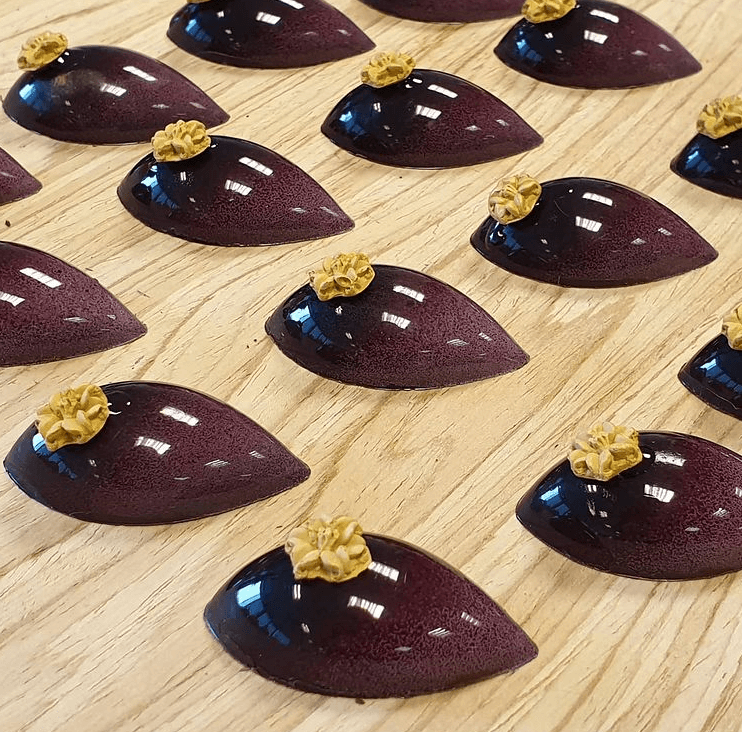

Hier vind je de lekkerste recepten van Nomnivore.
Als freelance kok en patissier deel ik graag mijn kennis. Wil je ook zulke lekkere patisserie maken of op de zaak verkopen? Neem contact met me op of probeer het zelf. Hier vindt je regelmatig nieuwe recepten dus ik zie je graag hier terug!
Chocolade bombes

Ingrediënten:
- 1 pak Dr. Oetker Wolken Choco-Kokos
- 200g slagroom
- 3 eieren
- 500g slagroom
- 8g gelatine
- 120g eiwit
- 150g chocolade puur
- 150g chocolade wit
- zout
- poedersuiker
- 20g Dr. Oetker Glazuur Choco
- chocolade
Bereidingswijze:
- Bereid Dr. Oetker Wolken Choco-Kokos volgens de aanwijzingen op de verpakking in een springvorm. Laat de taart goed afkoelen.
Laat de gelatine weken in een kom met koud water.
- Smelt de witte en de pure chocolade in aparte kommen au bain-marie, voeg aan elke kom 4 gram gelatine en 20 ml water toe, roer goed en klop in een aparte kom de slagroom stijf.
Klop met een mixer met garde de eiwitten samen met de poedersuiker in een vetvrije kom tot stijve pieken.
Verdeel de slagroom over 2 kommen en spatel in de ene kom de witte chocolade en in de andere kom de pure chocolade door de slagroom.
Verdeel de eiwitten over beide kommen en spatel tot een luchtige mousse.
- Snijd de taart vervolgens vanaf het midden in gelijke plakken van 1 cm dik.
Bekleed een glazen kom met plasticfolie en bekleed vervolgens de gehele binnenkant van de kom met eenderde van de plakken cake. Druk deze goed aan.
-
Bestrijk de cake met een laagje sinaasappeljam en vul de eerste laag met de witte chocolademousse.
Bedek met een laagje cake en volg met de pure chocolademousse en plaats de laatste laag cake er bovenop.
Zorg dat er geen openingen meer zijn.
- Laat de taart minimaal 2 uur opstijven in de koelkast.
Haal de kom uit de koelkast en keer deze om. Stort de cake op een bord en verwijder de vershoudfolie.
- Leg ondertussen de Dr. Oetker Glazuur Choco 10 minuten in een kom met heet water. Kneed het zakje vervolgens en bestrijk de Choco Bombe gelijkmatig met de glazuur.
Verjaardags-taart

Ingrediënten:
- 100 g roomboter
- 100 g fijne suiker
- 2 eieren
- 100g zelfrijzend bakmeel
- zout
- 2g vanille
- 60g slagroom
- 5g vanille suiker
- 125 g mascarpone
- 100 g aardbeien
- 100 g frambozen
- 100g bosbessen
Bereidingswijze:
- Klop boter en suiker in een paar minuten romig.
Voeg de eieren 1 voor 1 toe, mix tot ze helemaal zijn opgenomen.
- Voeg zelfrijzend bakmeel, zout en vanille toe. Mix tot het meel helemaal gemengd is.
Stort het beslag in een met bakpapier beklede bakvorm en spreid gelijkmatig uit.
- Bak de cake in 20-25 minuten op 160 C° tot hij gaar is. Laat de cake op een rooster helemaal afkoelen.
Als de taart is afgekoeld maak je de topping. Doe slagroom, vanillesuiker en mascarpone in een kom en mix tot een stevige gladde room.
- Maskeer de cake met de room en decoreer met het rode fruit.
Bonbons

Ingrediënten:
- 125g suiker
- 20 g water
- 150g slagroom
- 1 stokje vanille
- 125g melkchocolade
- 40g boter
- 400g pure chocolade
Bereidingswijze:
- Begin ruim van tevoren met de vulling, zodat deze voldoende tijd heeft om op te stijven.
Doe de suiker met het water in een hoge pan en laat deze op middelhoog vuur koken tot een goudbruine karamel.
Doe ondertussen de slagroom met het vanillemerg in een ander pannetje en breng dit aan de kook. Giet de hete slagroom op de karamel en roer tot alle karamel is opgelost.
Let op: Het mengsel is erg heet en gaat bruisen en bubbelen, dat is normaal. Schenk de karamelroom over de melkchocoladecallets en roer tot deze gesmolten zijn.
Voeg de boter in kleine blokjes toe en meng het geheel met een staafmixer tot een gladde massa. Laat de vulling opstijven op kamertemperatuur.
- Vul de bonbonvorm met chocolade en zorg dat ieder vormpje gevuld is. Schraap de overtollige chocolade van de vorm af met een schraper of paletmes.
Tril de vorm wat heen en weer op het werkblad zodat eventuele luchtbelletjes die in de chocolade zitten naar boven komen.
Keer de vorm om boven en sla een paar keer zachtjes tegen de vorm om te zorgen dat het meeste van de chocolade er weer uit druipt.
Laat de bonbonvorm enkele minuten op zijn kop liggen.
Schraap vervolgens de bovenkant van de vorm schoon met de schraper of met een paletmes. Plaats de vorm in de koelkast zodat de chocolade uit kan harden.
- Vul de bonbons met de vulling, dit gaat het makkelijkst met een spuitzak. Zorg dat je ze niet te vol vult, er moet ruimte overblijven om de bonbons straks nog te sluiten.
Plaats de gevulde bonbons in de koelkast zodat de vulling op kan stijven.
Vul de vorm opnieuw met chocolade en verdeel deze over alle vormpjes met behulp van een schraper of paletmes. Schraap vervolgens alle overtollige chocolade weg.
Plaats de vorm weer in de koelkast om de chocolade goed te laten stollen. Keer de vorm voorzichtig om en tik deze voorzichtig tegen het werkblad, zodat de bonbons uit hun vorm komen.
Probeer de bonbons met handschoenen op te pakken, zo krijg je geen vingerafdrukken op de chocolade.